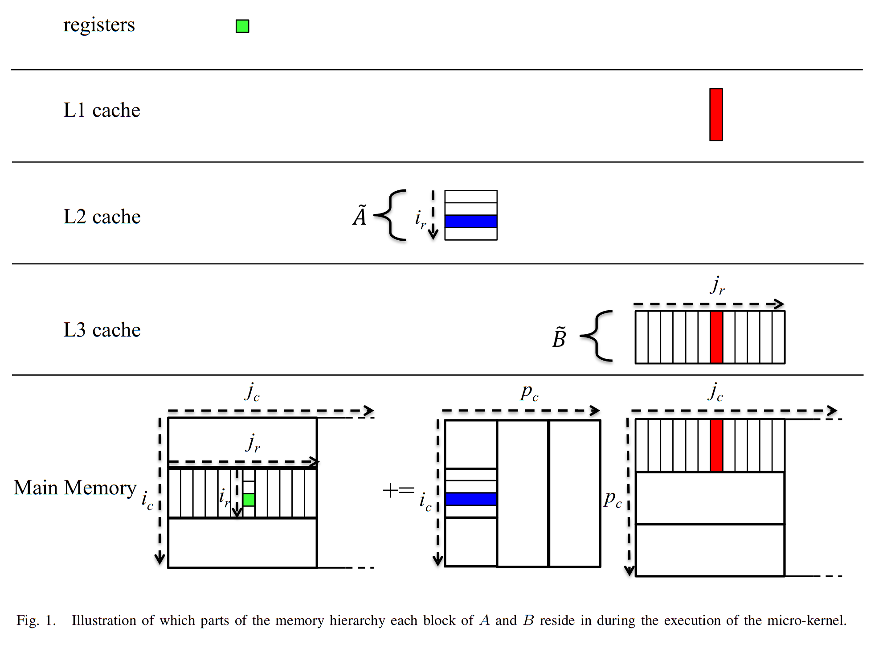
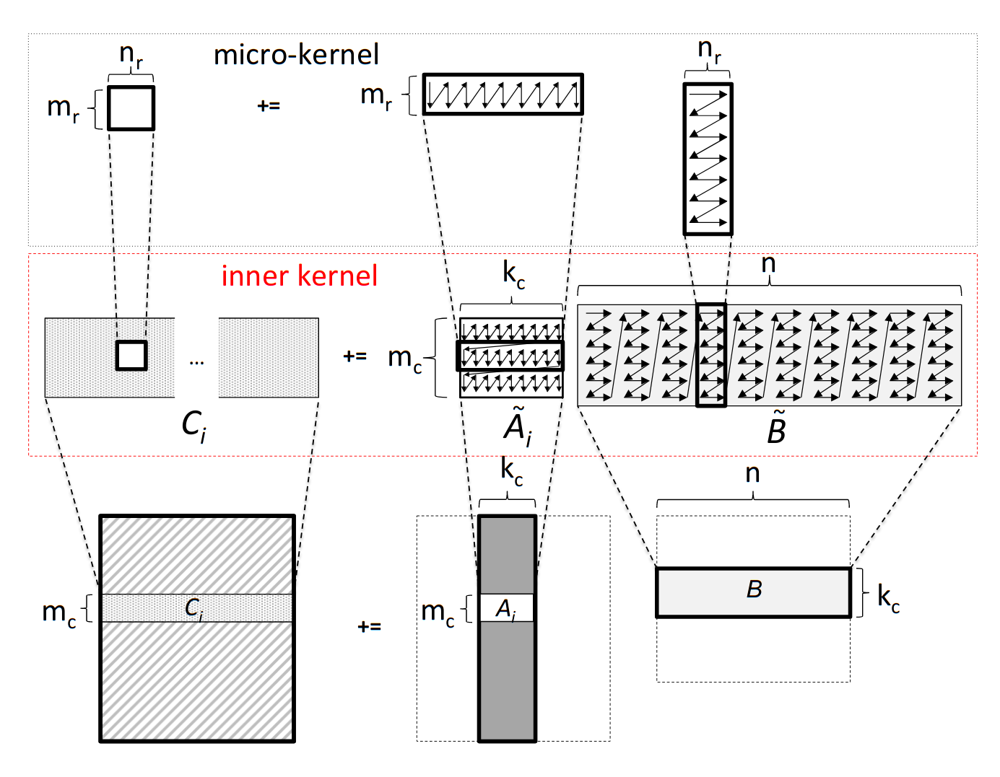
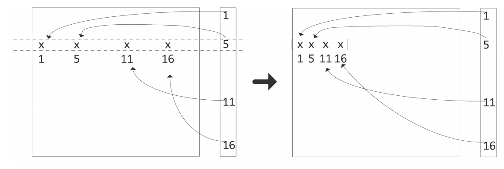
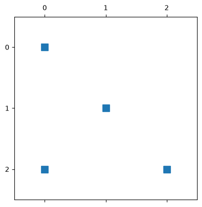
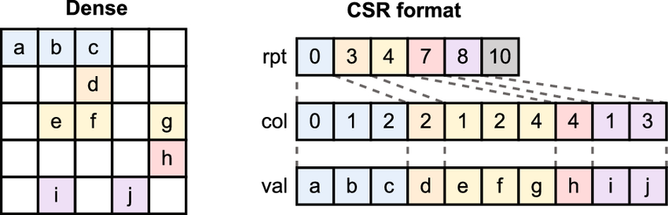

20261029 - Linear Algebra¶
As we’ve seen, executing even basic mathematical operations at max performance on hardware is hard
Many different moving parts
Cache sizes, vector instruction widths, memory access patterns, instruction level-parallelism
Plenty of “gotchas”
Cache coherency, cache thrashing, uncooperative compilers
Luckily, there is a lot of overlap between the work that scientific codes do.
Today, we’ll talk about the most fundamental building blocks that you can do: Linear Algebra
and specifically how you should nearly always use a library to handle them.
BLAS (Basic Linear Algebra Subprograms)¶
Originally released in the late 70s as a Fortran library
Available through the legendary netlib website
BLAS is what powers many of the most popular “array” libraries out there
Julia has BLAS built right into the language
Numpy makes heavy usage of BLAS in the backend
[2]:
import numpy as np
np.__config__.show()
np.__version__
Build Dependencies:
blas:
detection method: pkgconfig
found: true
include directory: /opt/_internal/cpython-3.14.3/lib/python3.14/site-packages/scipy_openblas64/include
lib directory: /opt/_internal/cpython-3.14.3/lib/python3.14/site-packages/scipy_openblas64/lib
name: scipy-openblas
openblas configuration: OpenBLAS 0.3.33.112.0 USE64BITINT DYNAMIC_ARCH NO_AFFINITY
Haswell MAX_THREADS=64
pc file directory: /project/.openblas
version: 0.3.33.112.0
lapack:
detection method: pkgconfig
found: true
include directory: /opt/_internal/cpython-3.14.3/lib/python3.14/site-packages/scipy_openblas64/include
lib directory: /opt/_internal/cpython-3.14.3/lib/python3.14/site-packages/scipy_openblas64/lib
name: scipy-openblas
openblas configuration: OpenBLAS 0.3.33.112.0 USE64BITINT DYNAMIC_ARCH NO_AFFINITY
Haswell MAX_THREADS=64
pc file directory: /project/.openblas
version: 0.3.33.112.0
Compilers:
c:
commands: cc
linker: ld.bfd
name: gcc
version: 14.2.1
c++:
commands: c++
linker: ld.bfd
name: gcc
version: 14.2.1
cython:
commands: cython
linker: cython
name: cython
version: 3.2.8
Machine Information:
build:
cpu: x86_64
endian: little
family: x86_64
system: linux
host:
cpu: x86_64
endian: little
family: x86_64
system: linux
Python Information:
path: /tmp/build-env-phs97gf4/bin/python
version: '3.14'
SIMD Extensions:
baseline:
- X86_V2
found:
- X86_V3
- X86_V4
- AVX512_ICL
not found:
- AVX512_SPR
[2]:
'2.5.1'
Basic functionality on 3 levels
Level 1: Vector Operations
Dot product, scaled vector addition
Level 2: Generalized Matrx-Vector (gemv)
Level 3: Generalized Matrix-Matrix (gemm)
The naming of the operations in this library have (in some cases) become universal
Notably,
AXPYto denote \(\mathbf{y} = \alpha \mathbf{x} + \mathbf{y}, \quad \alpha \in \mathbb{F} \text{ and } \mathbf{x}, \mathbf{y} \in \mathbb{F}^n\)
Many Implementations
Many add multi-threaded functionality
Some have extra functions beyond the BLAS standard
May have different numerical precision options available
Examples:
-
Portable, high performance library built on micro-kernels (we’ll talk about that in a bit)
Intel MKL (Math Kernel Library)
Intel-specialized BLAS-like library
-
BLAS, but for NVIDIA GPUs and CUDA
-
Specializes in matrix-matrix multiplication
Uses compiler-independent Just-in-Time compilation to create custom kernels depending on the matrix size
-
BLIS microkernels¶


LAPACK (Linear Algebra Package)¶
Above the normal matrix operations are
But there are other common matrix algebra operations that are quite common as well
Solving linear system of equations, \(\mathbf{Ax} = \mathbf{y}\)
Eigenvalue or singular value decompositions
Matrix factorizations (LU, QR, Choelsky) These are often grouped together in LAPACK
Similar origin story as BLAS
Descended in University of Tennessee
Hosted on netlib
Originally in Fortran
Many libraries implementing similar functionality often use the same function naming scheme
In a similar vein, many other implementations (or sub implementations) have been released
-
The original Fortran, still available
MAGMA (Matrix Algebra on GPU and Multicore Architectures)
heterogenous (CPU and GPU together) BLAS/LAPACK
-
Portable LAPACK/BLAS kernels written in Kokkos (GPU-capable programming model)
-
Standard C++ matrix-algebra library (equivalent to
numpyfor Python, but not as universal)
Many of the above mentioned “BLAS” libraries also implement some LAPACK functionality
-
Dense vs Sparse Matrix¶
Vectors (nearly) always treated as dense
Perhaps banded, but underlying data structure is contiguous
Many/most scientific matrices are sparse
Contain many, many more zeros than they do
Exact definition of “sparse” is ambiguous, but at least 99% zero elements
Dense matrices exist in scientific computing, but are usually much smaller than the problem size
Aside: Nomenclature¶
There are two different concepts when we talk about dense and sparse matrices
The character of the matrix entries (e.g. how many non-zero values are there)
The format a matrix is stored in a computer
It is possible to store a sparse matrix (in character) using a dense matrix format.
Dense Matrix Storage¶
Easiest way to store a matrix is as a dense, contiguous array of memory
C standard is row-major ordering (list of lists), while Fortran standard is column-major ordering
Performance implications for either choice, one is not worse than the other
Row-major ordering is more popular

Algorithm for densely stored matrix:
aptr = 0;
for (row=0; row<nrows; row++) {
s = 0;
for (col=0; col<ncols; col++) {
s += a[aptr] * x[col];
aptr++;
}
y[row] = s;
}
If
ais mostly zeros, then we do a lot of work for nothingAdditionally,
ais wasting space in general
Sparse Matrix Storage¶
We have two primary concerns
Space savings
Computational efficiency
If we only cared about space savings, this becomes a pure data-compression problem
We really want to handle both
General idea:

[2]:
%matplotlib inline
import scipy as sp
import scipy.sparse as sparse
import scipy.sparse.linalg as sla
Coordinate format (COO)¶
By far the simplest, not always the best
Store the following triple for each non-zero entry:
value, row, columnvalueis the actual matrix entry valuerowandcolumndenote the location (coordinate) where the value should go
[14]:
row = [0,2,1]
col = [0,2,1]
val = [1,1,1]
S = sparse.coo_matrix((val, (row,col)), shape=(3,3))
S.toarray()
[14]:
array([[1, 0, 0],
[0, 1, 0],
[0, 0, 1]])
Easy to add on new values
[15]:
row = [0,1,2,2]
col = [0,1,2,0]
val = [1,1,1,2]
S = sparse.coo_matrix((val, (row,col)), shape=(3,3))
S.toarray()
[15]:
array([[1, 0, 0],
[0, 1, 0],
[2, 0, 1]])
Visualize the sparsity pattern using spy:
[10]:
plt.spy(S)
plt.show()

Pros and cons of coordinate sparse format
Pro:
Coordinate format is incredibly flexible, doesn’t require any knowledge of the sparsity pattern of the matrix
Con:
Poor computational efficiency (data can be located anywhere, no hope or guarantee of cache locality or vectorization)
Poor storage efficiency (if I have many values in a compact space, I still need 3 values for each of them)
Compressed Sparse Row (CSR)¶
Store contiguous rows of the data, and provide coordinate for where they need to go
Can also do contiguous columns of data, called CSC

From here
Contiguous rows allows for best cache locality in matrix-vector product
CSC best for matrix-transpose-vector product
[6]:
ptr = [0,2,4,5]
col = [0,2,0,1,2]
val = [1,2,3,1,1]
S = sparse.csr_matrix((val, col, ptr), shape=(3,3))
S.toarray()
[6]:
array([[1, 0, 2],
[3, 1, 0],
[0, 0, 1]])
Matrix-Vector product using a sparse matrix representation
aptr = 0;
for (row=0; row<nrows; row++) {
s = 0;
for (icol=ptr[row]; icol<ptr[row+1]; icol++) {
int col = ind[icol];
s += a[aptr] * x[col];
aptr++;
}
y[row] = s;
}
We have non-uniform memory access
Potentially poor cache locality
Really difficult/impossible to vectorize